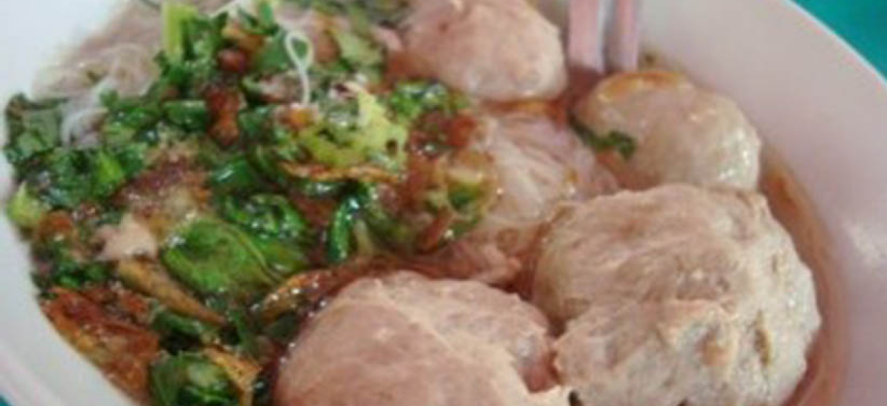

Makanan daging bulat dan berkuah atau yang biasa disebut dengan bakso, sudah tidak lagi asing di telinga masyarakat Indonesia. Pasalnya, makanan yang cocok disantap dalam kondisi cuaca apapun itu membuat yang menikmati akan merasa tergugah dengan aroma kuah yang dicampur sambal maupun kecap sesuai dengan selera.
Berada di Kota Lampung, terdapat salah satu penjual bakso yang sudah ternama seperti Bakso dan Mi Ayam Son Haji Sony. Masyarakat Lampung, sudah tidak asing dengan bakso yang sudah berdiri sejak 1996.
Ketika sampai di lokasi tersebut pada siang hari, terlihat sudah banyak antrean kendaraan yang sedang mencari parkiran di sekitar toko yang berlokasi di Jalan Wolter Monginsidi No 42 A, Durian Payung, Kecamatan Tj Karang Pusat, Kota Bandarlampung. Terlihat berbagai plat nomor yang berasal dari berbagai daerah di Indonesia, menyempatkan untuk menikmati kudapan yang sangat tenar di masyarakat lokal dan juga warga luar Lampung."
Sudah pasti, menu yang banyak diincar oleh para pemburu makanan berkuah ini adalah bakso yang menjadi trademark. Meski tidak berbeda dengan bakso-bakso pada umumnya, Bakso Sony Lampung ini ramai terus dikunjungi oleh masyarakat. Bahkan, Bakso Sony terlihat tidak memiliki varian yang aneh-aneh seperti "bakso kekinian" yang memiliki ukuran dan porsi yang besar dengan kombinasi yang berbeda-beda.
Dalam hal ini, Bakso Sony dibanderol dengan harga Rp 20 ribu untuk pilihan polos (tanpa sayuran dan juga mi) dan dengan harga yang sama dengan campuran mi. Selain itu, ada juga pilihan menu untuk pecinta mi ayam dengan tambahan bakso seharga Rp 20 ribu dan mi ayam tanpa bakso Rp 14 ribu.
Dalam satu porsi terdapat enam buah bakso dengan dimensi yang standar bakso pada umumnya, yakni berdimensi sedang. Baksonya sendiri pun tidak terlalu lembut, untuk memotong harus menggunakan sendok yang diapit dengan garpu. Meski begitu, ketika potongan bakso memasuki mulut, terasa sekali tekstur yang padat namun tetap kenyal dan mudah untuk dilumat, sehingga tidak terasa enam buah bakso yang ada pada mangkuk dengan singkat habis tak tersisa.
Kenikmatan dari bakso ini tidak terlepas dari peran kuahnya yang sangat gurih dan juga sangat menggugah selera. Sehingga, satu porsi bakso terasa tidak cukup untuk menutupi perut yang memang sudah waktunya untuk diisi. "Meski hampir setiap kali makan Bakso ini, kami tidak pernah merasa bosan, karena memang enak dan gurih," ungkap Ernawati pelanggan yang sering mengajak keluarganya datang kesini.
Meski yang berada di luar Bandar Lampung, mereka juga bisa tetap menikmati bakso tersebut. Pasalnya, di gerainya ini memiliki paket yang sudah bisa dijadikan buah tangan ketika balik ke kampung halaman.
Terlihat, sebelum memasuki bilik pemesanan, konsumen akan melewati gerai oleh-oleh yang sudah siap untuk dibawa. Paket oleh-oleh ini disajikan dalam keadaan beku, sehingga tidak akan basi jika jadikan buah tangan.
Bakso dan mi Ayam Son Haji Sony ini tidak hanya menyediakan bakso saja yang disajikan dalam keadaan beku, melainkan terdapat berbagai macam makanan seperti Pempek, Otak-otak dan juga Tekwan. Harga yang ditawarkan juga bervariasi mulai dari Rp 150 ribu hingga yang termurah seharga Rp 35 ribu.
Sebagai informasi tambahan, untuk para pelanggan yang hendak ingin merasakan bakso secara langsung, mereka diharap untuk bersabar dikarenakan banyaknya pengunjung setiap harinya membuat pelayanan menjadi sedikit lama.